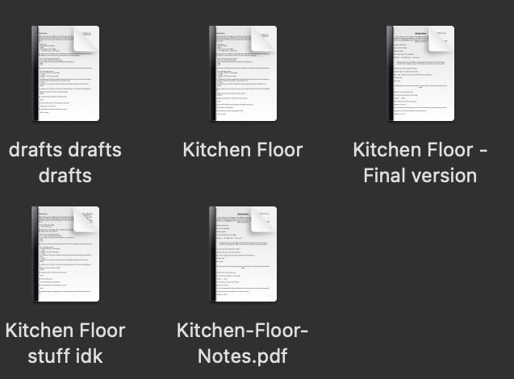
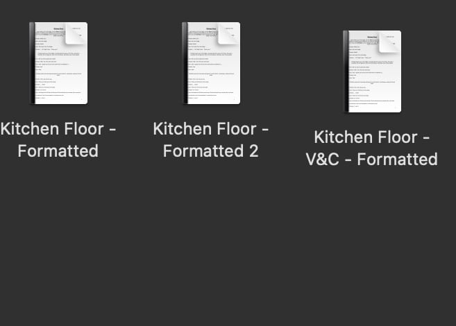

<!DOCTYPE html>
<html lang="en-GB" dir="ltr">

</html>

<head>
    <meta charset="UTF-8">
    <meta name="viewport" content="width=device-width, initial scale=1.0">
    <meta http-equiv="X-UA-Compatible" content="ie=edge">
    <link rel="stylesheet" type="text/css" href="writing.css">
    <link rel="preconnect" href="https://fonts.googleapis.com">
    <link rel="preconnect" href="https://fonts.gstatic.com" crossorigin>
    <link href="https://fonts.googleapis.com/css2?family=Roboto+Slab:wght@300&display=swap" rel="stylesheet">
    <script src="script.js" defer></script>
    <title>writing</title>
</head>

<body>
    <main>
        <header>
            <h1>writing</h1>
            <a class="home-button" href="index.html">home</a>
        </header>
        <section class="grid-container">
            <div class="carousel" data-carousel>
                <button class="carousel-button prev" data-carousel-button="prev">&#60;</button>
                <button class="carousel-button next" data-carousel-button="next">&#62;</button>
                <ul data-slides>
                    <li class="slide" data-active>
                        
                    </li>
                    <li class="slide">
                        
                    </li>
                    <li class="slide">
                        
                    </li>
                </ul>
            </div>
            <p class="poetry">poetry</p>
            <p class="plays">plays</p>
            
            
            
            <p class="first-para">
                <i>Kitchen Floor</i> was made into two different productions at Royal Holloway University of London
                involving
                myself as writer-director for one performance, and writer for another
            </p>
            <p class="second-para">
                a wildly underqualified writer trying to make sense of people by making up fake people that actually
                make sense
            </p>
            <p class="third-para">
                (professionally speaking this just proves that I am capable of expressing messages in a multitude of
                fashions, including: accurately captioning videos, creating text for social media posts, writing
                detailed programme reviews for budget consideration)
            </p>
            <div class="popup" id="popup-1">
                <div class="overlay"></div>
                <div class="content">
                    <p class="fourth-para">"A couple in a permanent state of exasperation with each other and the
                        life they
                        have chosen, Kitchen Floor asks not if they are meant to be together, but simply, if they
                        can be
                        bothered to try again at all. The piece opens with Christian (Dimitros Vanos) arriving home
                        to
                        an
                        ancious and emotional Vince (Jack Kidson) who has been counting tiles waiting for him to
                        return.
                        From this rather calm opening, Kitchen Floor takes us on a whistlestop tour of the couple's
                        emotional baggage. Wynne's writing crafts a superb narrative that, as an audience, we
                        understand
                        we
                        are joing midway through and watching as the couple unload copious amounts of frustration on
                        each
                        other. Kidson's stellar performance as the anxious Vince trying his hardest to keep it
                        together
                        long
                        enough to say what he needs to say is perfectly contrasted to Vanos' more headstrong and
                        logical
                        Christian. Neither couple are in the right, both have made mistakes, and the audience are
                        not
                        asked
                        to choose whose siderto take but simply have to watch helpless as two clearly damaged and
                        lost
                        individuals make a decision about their future. The piece was filled with highs and lows,
                        dynamic
                        moments and moments of uncomfortable silence and still that kept the audience on the edge
                        seats
                        and
                        just as nervous for the couple to see where Christian and Vince would end up. Kitchen Floor
                        was
                        a
                        highlight of the spring term MatB and I for one cannot wait to see where Wynne's writing
                        goes
                        next!"</p>
                </div>
            </div>
            <button class="envelope" onclick="togglePopup()">&#9993;</button>
            <p class="anonymous">~ anonymous review from <a class="matb" href="https://www.instagram.com/p/CdOFGrTtnc_/"
                    target="_blank">MatB</a>
            </p>
            <p class="footer">
                credit goes to the Notes app, Pages, Procreate and whatever it is that's wrong with my brain
            </p>
        </section>
    </main>
</body>

</html>